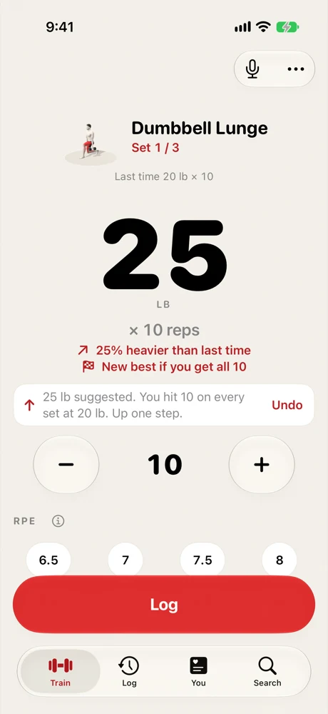
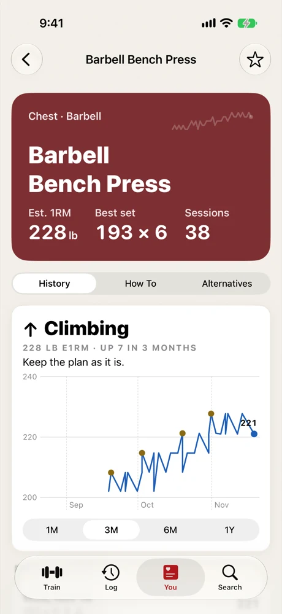
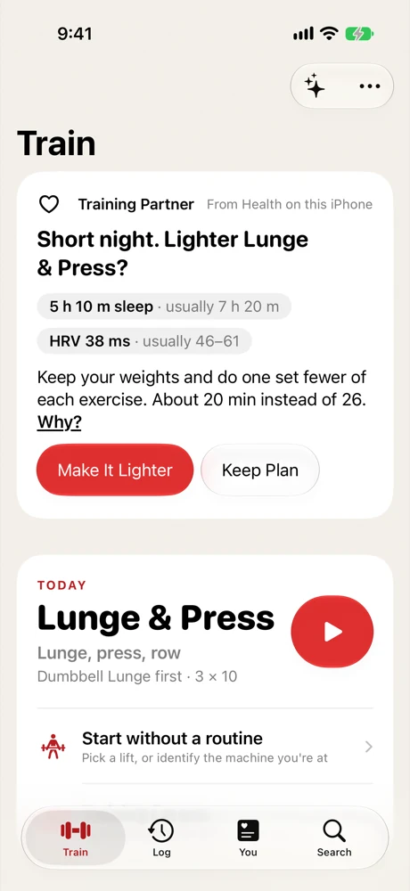
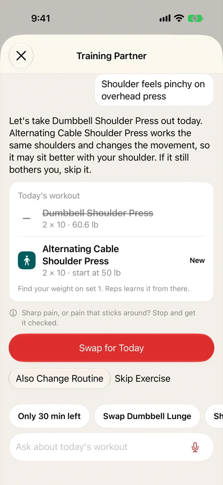
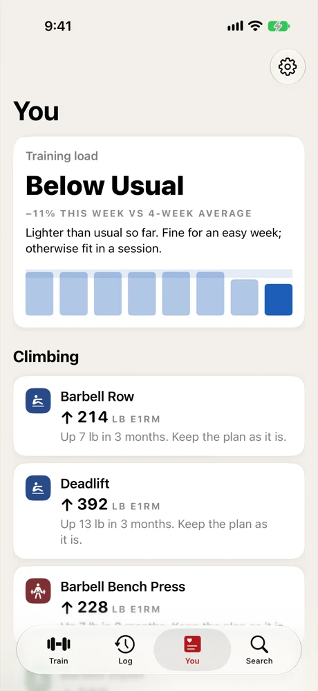
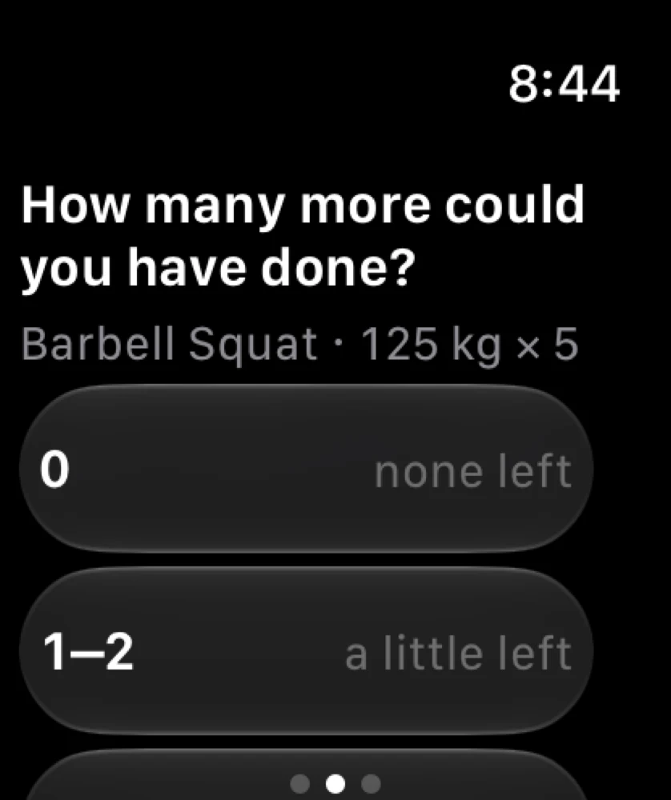
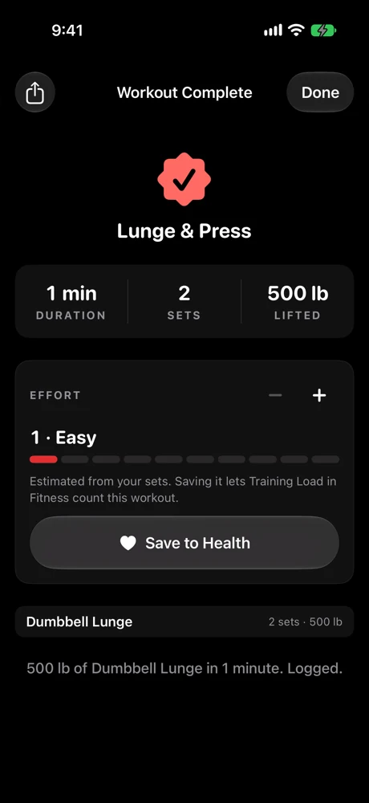

Lift log for iPhone and Apple Watch
One tap per set.
It tells you what's next.
Every lift opens on last time's weight. Log it in one tap, and Reps suggests the next jump with the reason behind it. No account, no ads, nothing sent to us.
Free to download. Logging is free and unlimited.

- 1tap to log a set, prefilled from last time
- 0accounts, ads or trackers
- 850+exercises, each with step-by-step instructions
- 3apps you can import from: Strong, Hevy, FitNotes
Suggestions with reasons
Knows the next jump, and says why.
Hit the top of your rep range on every set and Reps offers the smallest step up. Miss twice and it backs off. Stall for three sessions and it plans a lighter week, then a retest. Every change has a one-line reason and Undo.
- Double progression you can recite, not a black box
- Rep range, effort and your gym's plates and dumbbells taken into account
- A lighter week planned after a stall, then a retest

Recovery · Pro
Short night? It offers a lighter day.
Reps compares last night's sleep, your heart rate variability and your resting heart rate with your own usual, from Apple Health on your iPhone. When you slept well short of usual and your heart data agree, it suggests the same weights with one set fewer and says how much time that saves. You decide.
- Plain numbers: "5 h 10 m sleep · usually 7 h 20 m"
- Ask first, automatically, or off
- No score, no diagnosis

Training Partner · Pro
Ask about today's workout.
"Shoulder feels pinchy on overhead press." Reps swaps in a lift for the same muscles at a weight no heavier than today's plan, and tells you to get it checked if the pain is sharp or sticks around. "Only 30 minutes left" drops accessories first.
- Runs on your iPhone with Apple Intelligence; nothing leaves the phone
- Every number comes from Reps' own rules, never made up
- Swap for today, change the routine, or skip, with Undo

Progress
See what's climbing, in two seconds.
Each lift gets one word: Climbing, Holding or Stalled. Then one number and one sentence that ends in what to do. Training load compares this week with your usual, and muscle balance shows which groups are short of 10 hard sets.
- All your history, free, no 3-month limit
- The method is written on the page

Apple Watch
A Watch app that doesn't lose sets.
Lifters' most common Watch complaint is sets that vanish or double when phone and wrist fall out of sync. In Reps, one workout has one recorder, and every set carries its own ID, so a set sent twice is counted once.
- Log from the Watch on its own, with your heart rate live
- Swap or skip a lift on the wrist
- Turn the Digital Crown to set the weight; double-tap to log on supported models

Apple Health
Effort that counts in Fitness.
When you finish, Reps estimates how hard the workout was from your sets. Tap Save to Health and Training Load in the Fitness app counts it. Nothing is written until you tap.

Never unlock your phone mid-set
Lock Screen
Log the prefilled set, add 15 seconds or skip rest from the Live Activity.
Action Button and Control Center
Start a workout or log your next set without opening Reps.
Siri
"What did I lift last time in Reps" reads your last session for that lift.
Tap a sticker
Put an NFC sticker on your rack or a machine. Tap your iPhone on it and that lift opens.
Type or drag
Drag the big number, or tap it and type, with −/+ in your gym's plate steps.
StandBy
A rest timer you can read from across the gym floor.
How Reps compares
From each app's US App Store listing, checked 7 November 2026. Apps sell more than one price at once; the App Store shows today's.
| Reps | Strong | Hevy | |
|---|---|---|---|
| Routines on the free plan | Unlimited | 3 | 4 |
| Data linked to you (App Store privacy label) | None: Data Not Collected | Health & Fitness, Purchases, Contact Info, Identifiers, Diagnostics, Other | Purchases, Contact Info, Contacts, Usage Data |
| Yearly price | $29.99 | $29.99 (also seen at $23.99) | $23.99 |
| Lifetime price | $79.99 | $99.99 (also seen at $79.99) | $74.99 |
Yours, and only yours
No account. No servers. Your Health app keeps your history.
- Workouts are saved to Apple Health, so your history outlasts any app, including this one
- Reps runs no servers and never receives your workouts
- Bring your history from Strong, Hevy or FitNotes in one step
- Export everything as a spreadsheet, free, always
Free to log. Pro when you want a trainer.
Reps
Free
- Unlimited workouts, routines, programs and history
- Suggestions with reasons, and effort saved to Health
- Trends, training load and muscle balance
- Apple Watch app, widgets, Live Activity, controls and Siri
- Stickers, import and export
Reps Pro
$3.99 a month, $29.99 a year with a 7-day free trial, or $79.99 once
- Recovery: a lighter day after a short night, your call
- Training Partner: ask about today's workout, on your iPhone
- Your Week: a Sunday check-in that plans next week
- Monthly report: a 1–2 page PDF of your month
- Scan a machine and form check (beta)
US prices; the App Store shows yours. Subscriptions renew automatically unless canceled at least 24 hours before the end of the period. Training Partner needs an iPhone with Apple Intelligence; without it, Reps uses built-in wording.
Questions
Do I need an account?
No. There's nothing to sign up for. Open Reps and start a workout.
I use Strong or Hevy. How do I switch?
Export your workouts from Strong, Hevy or FitNotes as a file, then import it in Reps Settings. Warm-up, drop and failure sets come across. Your past workouts appear in your history and in Apple Health, and importing the same file twice adds nothing.
Is Reps free?
Yes. Logging, routines, programs, history, suggestions, trends, the Apple Watch app and widgets are free with no limits. Reps Pro adds recovery suggestions, Training Partner, the weekly check-in, the monthly report, machine scanning and form check.
Is the AI on my phone?
Yes. Training Partner uses Apple Intelligence on your iPhone and nothing is sent anywhere. It only writes the sentences; the weights and sets come from Reps' own rules, which you can read in the app.
Where are my workouts saved?
In Apple Health on your iPhone. Your history stays in your Health app even if you delete Reps. We don't run servers and never receive your workouts. Read the privacy policy.
Does it work without a signal?
Yes. Everything runs on your iPhone and Apple Watch, so a basement gym with no reception is fine.
Which devices does it run on?
iPhone with iOS 18 or later, and Apple Watch with watchOS 11 or later. Reps isn't available for iPad, Mac or Android.
How do I cancel Reps Pro?
In the Settings app, tap your name, then Subscriptions, then Reps. More on subscriptions.